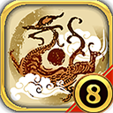

The classic · Renewal in progress
SanguoSeason
A familiar world, renewed with care.
Return to SanguoSeason: painted cities, a wide strategic map, and the warmth of the Gusu scroll. A classic being renewed without leaving its past behind.

The classic · Renewal in progress
A familiar world, renewed with care.
Return to SanguoSeason: painted cities, a wide strategic map, and the warmth of the Gusu scroll. A classic being renewed without leaving its past behind.
Development codename · Early development
Painted mountains. A new dimension.
A new Three Kingdoms world in 3D, shaped by blue-green mountain landscapes. Passes, cities and rivers belong not only in the painting, but in your strategy.

Imagined-world strategy · Concept direction
A world of your making.
A culturally neutral, multilingual counterpart to Sanguo3D. Similar strategic foundations, but an imagined setting and a focus on what players choose to build.

Late-Ming project · Longer-term direction
History before the world.
A future late-Ming project, beginning with the historical groundwork it needs. Sanguo3D’s technical architecture can support it; the history must be studied on its own terms.

One workshop.
Different worlds.
Historical settings and imagined possibilities, made at a small team’s pace. Choose a project to find its introduction, reading room, workshop notes, and downloads together.
The projects
The classic renewal and new Three Kingdoms game come first. Creators and Ming have their own future paths; ZHSan remains an independent companion.
01 · The classic · Renewal in progress
A familiar world, renewed with care.
Return to SanguoSeason: painted cities, a wide strategic map, and the warmth of the Gusu scroll. A classic being renewed without leaving its past behind.
Explore the project02 · Development codename · Early development
Painted mountains. A new dimension.
A new Three Kingdoms world in 3D, shaped by blue-green mountain landscapes. Passes, cities and rivers belong not only in the painting, but in your strategy.
Explore the project03 · Imagined-world strategy · Concept direction
A world of your making.
A culturally neutral, multilingual counterpart to Sanguo3D. Similar strategic foundations, but an imagined setting and a focus on what players choose to build.
Explore the project04 · Late-Ming project · Longer-term direction
History before the world.
A future late-Ming project, beginning with the historical groundwork it needs. Sanguo3D’s technical architecture can support it; the history must be studied on its own terms.
Explore the project
05 · Companion project · Independent branch
A separate path, shared affection.
The SeasonRealms branch of Zhonghua Sanguozhi (中华三国志). Independently maintained as a companion project, with respect for the original team’s brand and community.
About the companion branchA shared approach
The Gusu scroll’s warmth, blue-green mountains, a builder’s planning sheet, a historian’s reading table. Each project can find its own atmosphere within a familiar structure.
These projects are at different stages. Artwork, research plans, and working concepts are identified as such. An English website does not imply that every game already has an English release.
About Season GamesChoose a world. Read its stories, and watch it grow.
Pasts to discover, new worlds for you to build.
Mountains, cities, and the everyday lives between.